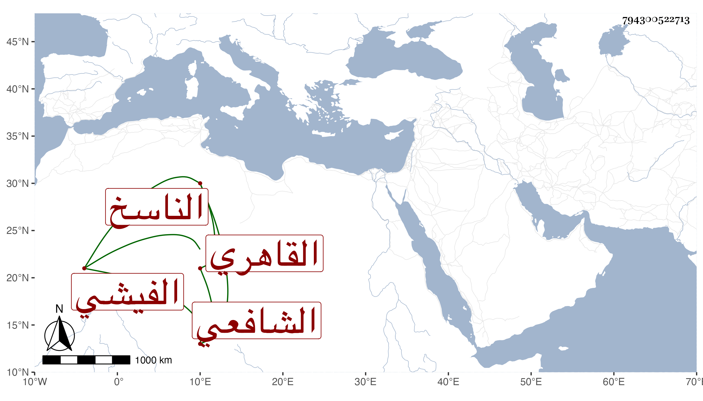

0902Sakhawi.DawLamic.ITO20230111-ara1.EIS1600.794300522713
Biography ID: 794300522713
61
أحمد بن علي بن سليمان بن عبد الرحمن شهاب الدين الفيشي ثم القاهري الشافعي الناسخ . حفظ القرآن وغيره واشتغل يسيرا وشارك وكتب الخط الجيد وتشاغل بالنسخ بالأجرة حتى كتب الكثير جدا ومما كتبه شرح البخاري لشيخنا نحو مرتين وأكثر وشرح ابن الملقن وجل الخادم وهو سريع الكتابة غير صحيحها وأم بجامع الغمري وبغيره وخطب وقرأ على القول البديع تصنيفي بعد أن كتب منه نسخا وكذا قرأ على غيره بل قرأ الحديث على العامة ببعض الجوامع وحج غير مرة وجاور وتكسب بالشهادة زمنا وتعانى التجارة وآخر أمره جلس لها في سوق الشرب حتى مات في حياة أبويه ليلة السب ثالث المحرم سنة أربع وثمانين بعد توعكه أياما بمرض حاد وصلى عليه من الغد بمصلى باب النصر ودفن بحوش بتلك النواحي ولم يقصر عن الخمسين وكان عاقلا ساكنا محتملا قائما بما يصلحه رحمه الله وإيانا .
